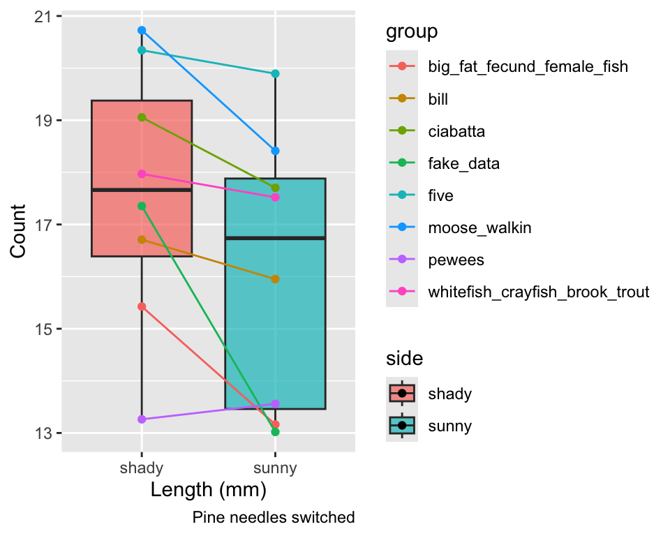
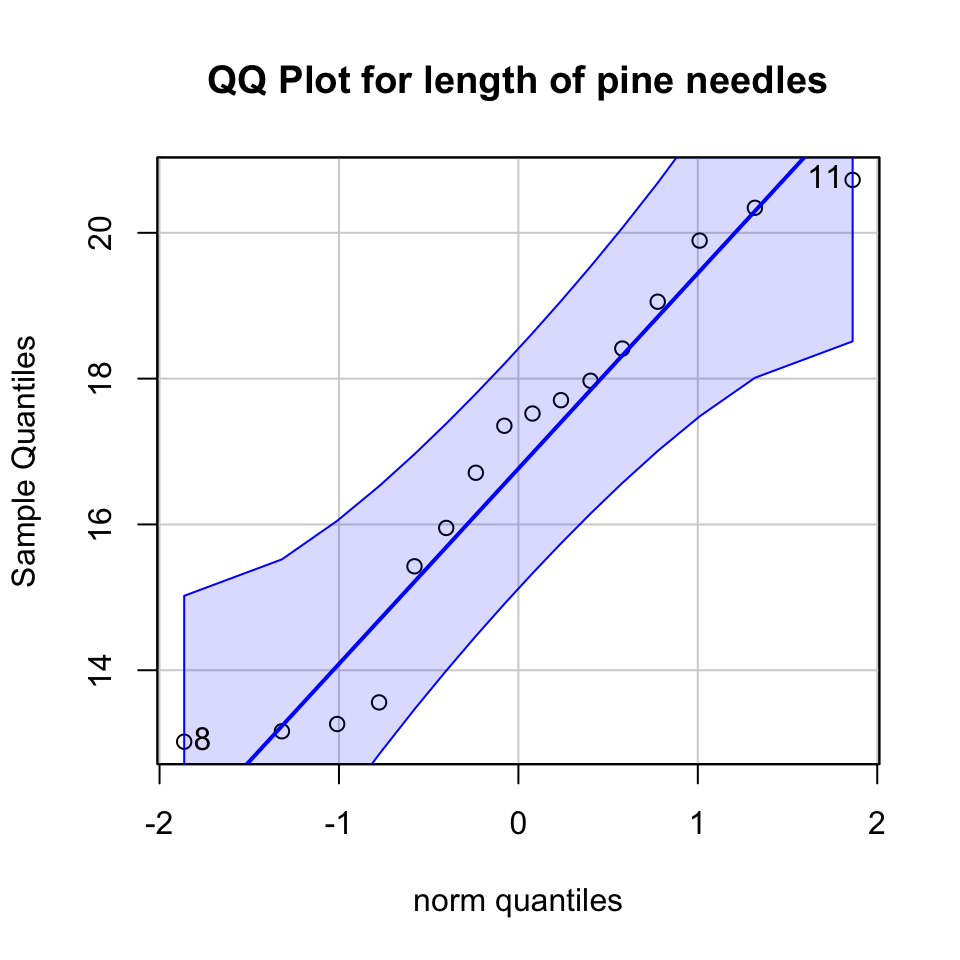
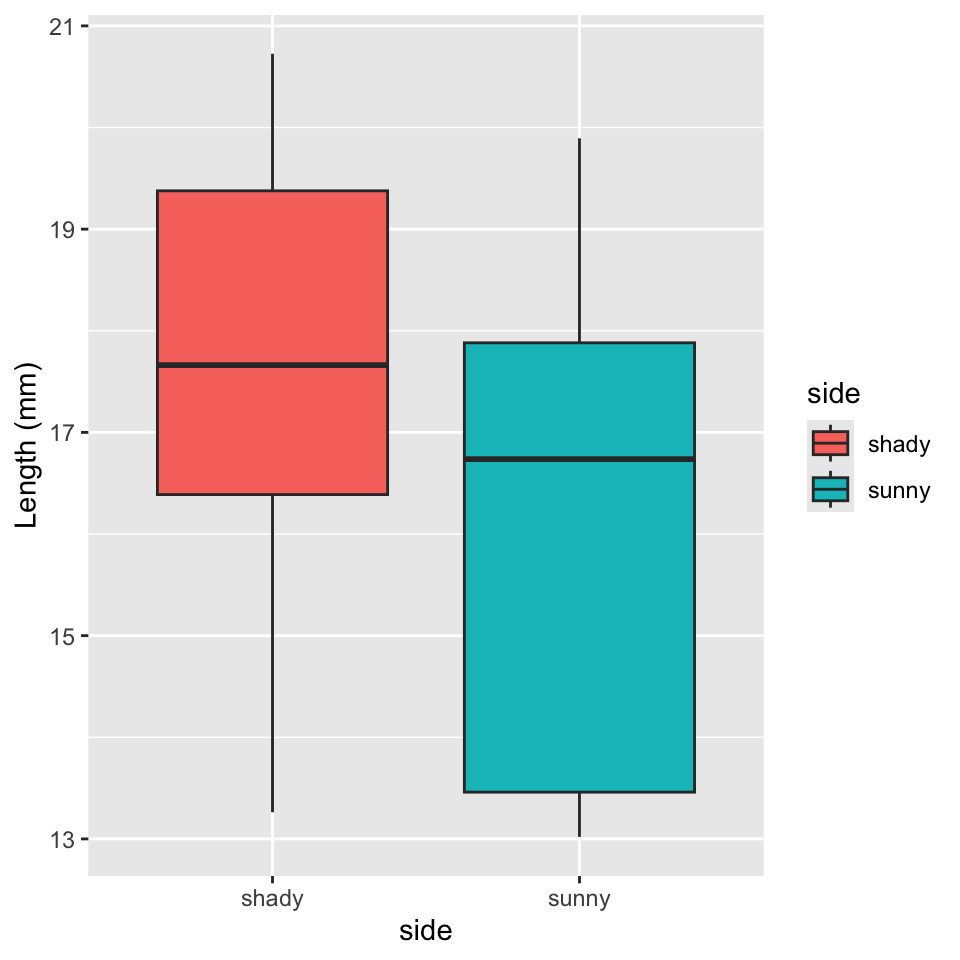
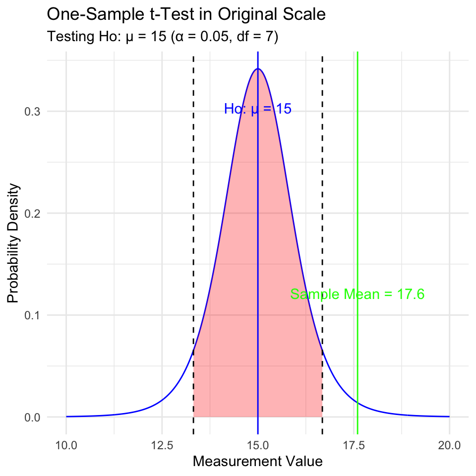
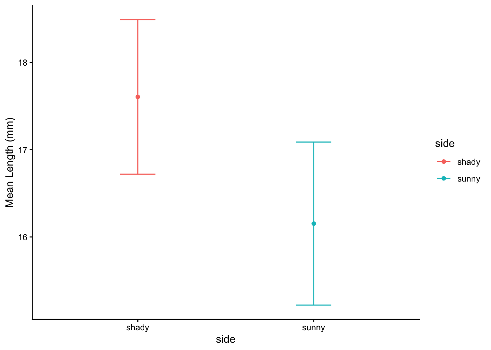
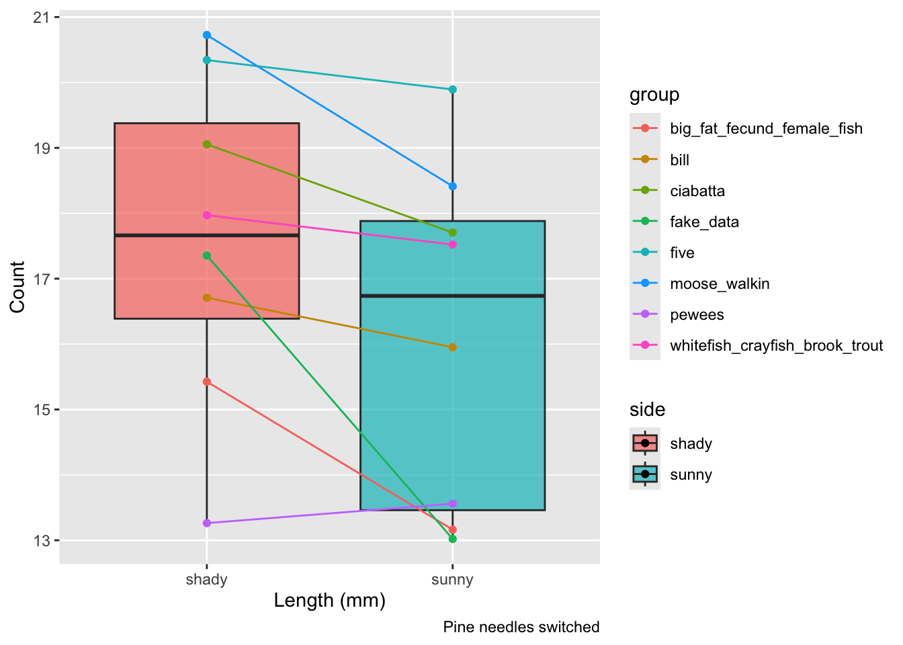

# A tibble: 2 × 5
side mean_length sd_length se_length count
<chr> <dbl> <dbl> <dbl> <int>
1 shady 17.6 2.51 0.886 8
2 sunny 16.2 2.64 0.934 8Lecture 05: Probability and Statistical Inference
Lecture 4: Review
- Introduction to histograms or frequency distributions
- Probability Distribution Functions (PDF)
- Z scores and T scores
- Tests of means using T-Tests
one sample
two sample

- Tests of means using T-Tests
- one sample - is the sample mean different from a hypothesized mean?
- two sample - are the sample means from two samples the same or different?
- for Two sample T-tests the df = n1+ n2 -2 = 8+8-2=14
Lecture 5: Probability and Statistical Inference
The goals for today
- Statistical inference fundamentals
- Hypothesis testing principles
- T Distributions
- One sample T Test
- Two sample T Test
- Paired T Test
- Assumption tests

Lecture 5: Probability and Statistical Inference
The goals for today
- Statistical inference fundamentals
- Hypothesis testing principles
- T Distributions
- One sample T Test
- Two sample T Test
- Paired T Test

Lecture 5: One-tailed Questions
One-tailed questions: area of distribution left or (right) of a certain value for a one sample test
- n=8 (df=7) - 95% of the observations found left
- t= 1.895 (5% are outside)

 xxxx
xxxx
Lecture 5: Two-tailed Questions
Two-tailed questions refer to area between certain values
- n= 8 (df=7), 95% of the observations are between
- t=-2.365 and t=2.365 (2.5% are outside on each side)
- One tailed was t= 1.895 (5% are outside)


Lecture 5: Calculating CI Example
Let’s calculate CIs again:
Use two-sided test
- \(\text{CI} = \bar{y} \pm t \cdot \frac{s}{\sqrt{n}}\)
- 95% CI Sample A: = 17.6 ± 2.365 * (2.51/(8^0.5)) = +/- 2.098746
- The 95% CI is between 15.50 and 19.70
- “The 95% CI for the population mean from sample A is 17.6 ± 2.1
Lecture 5: Applications of t-distribution
So:
- Can assess confidence that population mean is within a certain range
- Can use t distribution to ask questions like:
- “What is probability of getting sample with mean = ȳ
from population with mean = µ?” (1 sample t-test) - “What is the probability that two samples came from
the same population?” (2 sample t-test)
- “What is probability of getting sample with mean = ȳ
Lecture 5: One Sample T-Test
We want to test if the mean needle length on one side differs from 15mm.
Activity: Define hypotheses and identify assumptions
H₀: μ = 15 (The mean needle length on shade side is 15mm)
H₁: μ ≠ 15 (The mean needle length on shade side is not 240mm)
Assumptions for t-test:
- Data is normally distributed
- Observations are independent
- No significant outliers
Assumptions in R - qqplots from car
# YOUR TASK: Test normality of all pine needle lengths
# QQ Plot
qqPlot(ps_df$length_mm,
main = "QQ Plot for length of pine needles",
ylab = "Sample Quantiles")
[1] 8 11Statistical Test of Normality
Shapiro-Wilk test
# Shapiro-Wilk test
shapiro.test(ps_df$length_mm)
Shapiro-Wilk normality test
data: ps_df$length_mm
W = 0.92754, p-value = 0.2228Checking for Outliers
# Check for outliers using boxplot
# YOUR CODE HERE
# Create a boxplot comparing the two lakes
shady_sunny_plot <- ps_df %>%
ggplot(aes(x = side, y = length_mm, fill = side)) +
geom_boxplot() +
labs(
x = "side",
y = "Length (mm)",
fill = "side")
shady_sunny_plot
Practice Exercise 1: One-Sample t-Test
TipPractice Exercise 1: One-Sample t-Test
Let’s perform a one-sample t-test to determine if the mean needle length on the shady side differs from 15 mm:
# what is the mean
ps_shade_mean <- mean(ps_shady_df$length_mm, na.rm = TRUE)
cat("Mean:", round(ps_shade_mean, 1), "mm\n")Mean: 17.6 mm# Perform a one-sample t-test
t_test_result <- t.test(ps_shady_df$length_mm, mu = 15)
t_test_result
One Sample t-test
data: ps_shady_df$length_mm
t = 2.9414, df = 7, p-value = 0.02167
alternative hypothesis: true mean is not equal to 15
95 percent confidence interval:
15.51092 19.70030
sample estimates:
mean of x
17.60561 Interpret this test result by answering these questions:
- What was the null hypothesis?
- What was the alternative hypothesis?
- What does the p-value tell us?
- Should we reject or fail to reject the null hypothesis at α = 0.05?
- What is the practical interpretation of this result for botanists?
Lecture 5: Hypothesis Testing Framework
Hypothesis testing is a systematic way to evaluate research questions using data.
Key components:
- Null hypothesis (Ho): Typically assumes “no effect” or “no difference”
- Alternative hypothesis (Ha): The claim we’re trying to support
- Statistical test: Method for evaluating evidence against H₀
- P-value: Probability of observing our results (or more extreme) if H₀ is true
- Significance level (α): Threshold for rejecting H₀, typically 0.05
Decision rule: Reject Ho if p-value less than α or shorthand p < 0.05

Lecture 5: Hypothesis Testing
Hypothesis testing is a systematic way to evaluate research questions using data.
Key components:
- Null hypothesis (H₀): Typically assumes “no effect” or “no difference”
- Alternative hypothesis (Hₐ): The claim we’re trying to support
- Statistical test: Method for evaluating evidence against H₀
- P-value: Probability of observing our results (or more extreme) if H₀ is true
- Significance level (α): Threshold for rejecting H₀, typically 0.05
Decision rule: Reject H₀ if p-value < α

Lecture 5: Interpreting One-Sample T-Test Results
Activity: Interpret the t-test results
- What does the p-value tell us?
- Should we reject or fail to reject the null hypothesis?
How to report this result in a scientific paper:
“A one-sample t-test at α=0.05 showed that the mean needle length (… mm, SD = …) [was/was not] significantly different from the expected 15 mm, t(…) = …, p = …”
Lecture 5: Two Sample T-Tests Introduction
For example
- what is probability that population X is the same as population Y?
- How would you assess this question using what we learned?
- This is what we will do with the needle length again…

Lecture 5: Comparing Two Samples
For example
- what is probability that population X is the same as population Y?
How would you assess this question using what we learned?
shady_sunny_plot
# Based on the t-test results and the boxplot
#
# what can you conclude about the needle lenght on the two sides?Practice Exercise 2: Formulating Hypotheses
TipPractice Exercise 2: Formulating Hypotheses
For the following research questions about needle lengths write the null and alternative hypotheses:
- Are needle lengths on shady and sunny sides different?
What are the hypotheses?
Ho =
Ha =
Lecture 5: Two-Sample T-Test Framework
Now, let’s compare needles lengths from the two sides
Question: Is there a significant difference in needle length between the sides?
This requires a two-sample t-test.
Two-sample t-test compares means from two independent groups.
\(t = \frac{\bar{x}_1 - \bar{x}_2}{S_p\sqrt{\frac{1}{n_1} + \frac{1}{n_2}}}\)
where:
- x̄₁ and x̄₂: These represent the sample means of the two groups you’re comparing
- s²ₚ: This is the pooled variance, calculated as: s²ₚ = [(n₁ - 1)s₁² + (n₂ - 1)s₂²] / (n₁ + n₂ - 2), where s₁² and s₂² are the sample variances of the two groups.
- n₁ and n₂: These are the sample sizes of the two groups.
- √(1/n₁ + 1/n₂): This represents the pooled standard error.
\(t = \frac{SIGNAL}{NOISE}\)
Practice Exercise 3: Summary Statistics
TipPractice Exercise 3: Calculate summary statistics grouped by lake
Before conducting the test, we need to understand the data for each group.
You need this and the graph to see what is going on ….
group_summary <- ps_df %>% group_by(side) %>% summarize( mean_length = mean(length_mm), sd_length = sd(length_mm), n = n(), se_length = sd_length / sqrt(n) ) group_summary# A tibble: 2 × 5 side mean_length sd_length n se_length <chr> <dbl> <dbl> <int> <dbl> 1 shady 17.6 2.51 8 0.886 2 sunny 16.2 2.64 8 0.934
Practice Exercise 4: Effect Size
TipPractice Exercise 4: Effect size
We could also look at the difference in means… some cool code here
# Assuming your dataframe is called df
group_summary %>%
summarize(difference = mean_length[side == "shady"] - mean_length[side == "sunny"])# A tibble: 1 × 1
difference
<dbl>
1 1.45Practice Exercise 5: ggplot Summary Statistics
TipPractice Exercise 5: Using GGPLOT to get summary plot
GGplot also has code to make the mean and standard error plots we are interested in along with a lot of others
# Assuming your dataframe is called df
needle_mean_se_plot <- ggplot(ps_df, aes(x = side, y = length_mm, color = side)) +
stat_summary(fun = mean, geom = "point") +
stat_summary(fun.data = mean_se, geom = "errorbar", width = 0.2) +
labs(
x = "side",
y = "Mean Length (mm)") +
theme_classic()
needle_mean_se_plot
Lecture 5: Testing Assumptions for Two-Sample T-Test
For a two-sample t-test, we need to check:
- Normality within each group
- Equal variances between groups (for standard t-test)
- Independent observations
If assumptions are violated:
- Welch’s t-test (unequal variances)
- Non-parametric alternatives (Mann-Whitney U test)
Practice Exercise 6: Separate Group Data
TipPractice Exercise 7: Test normality of sunny pine needle lengths
Note you need to test each groups separately…
# how do you make separate dataframes to do this on?
# Separate data by groups
head(ps_shady_df)# A tibble: 6 × 5
# Groups: group, tree_no, tree_char [6]
group tree_no tree_char side length_mm
<chr> <dbl> <chr> <chr> <dbl>
1 big_fat_fecund_female_fish 2 tree_2 shady 15.4
2 bill 3 tree_3 shady 16.7
3 ciabatta 5 tree_5 shady 19.1
4 fake_data 8 tree_8 shady 17.4
5 five 1 tree_1 shady 20.3
6 moose_walkin 7 tree_7 shady 20.7head(ps_sunny_df)# A tibble: 6 × 5
# Groups: group, tree_no, tree_char [6]
group tree_no tree_char side length_mm
<chr> <dbl> <chr> <chr> <dbl>
1 big_fat_fecund_female_fish 2 tree_2 sunny 13.2
2 bill 3 tree_3 sunny 16.0
3 ciabatta 5 tree_5 sunny 17.7
4 fake_data 8 tree_8 sunny 13.0
5 five 1 tree_1 sunny 19.9
6 moose_walkin 7 tree_7 sunny 18.4Practice Exercise 8: Combined Normality Test
TipPractice Exercise 8: Test Normality at one time
There are always a lot of ways to do this in R
# there are always two ways
# Test for normality using Shapiro-Wilk test for each wind group
# All in one pipeline using tidyverse approach
normality_results <- ps_df %>%
group_by(side) %>%
summarize(
shapiro_stat = shapiro.test(length_mm)$statistic,
shapiro_p_value = shapiro.test(length_mm)$p.value,
normal_distribution = if_else(shapiro_p_value > 0.05, "Normal", "Non-normal"))
normality_results# A tibble: 2 × 4
side shapiro_stat shapiro_p_value normal_distribution
<chr> <dbl> <dbl> <chr>
1 shady 0.966 0.868 Normal
2 sunny 0.900 0.289 Normal Practice Exercise 13: Test Equal Variances
TipPractice Exercise 13: Test equal variances
Levenes test can be done on the original dataframe
Note: the Levenes Test should be NOT SIGNIFICANT - What is the null hypothesis
# Method 1: Using car package's leveneTest
# This is often preferred as it's more robust to departures from normality
levene_result <- leveneTest(length_mm ~ side, data = ps_df)
print("Levene's Test for Homogeneity of Variance:")[1] "Levene's Test for Homogeneity of Variance:"print(levene_result)Levene's Test for Homogeneity of Variance (center = median)
Df F value Pr(>F)
group 1 0.2062 0.6567
14 Lecture 5: Conducting the Two-Sample T-Test
Now we can compare the mean needle lengths between shady and sunny sides.
Ho: μ₁ = μ₂ (The needle lengths do not differ)
Ha: μ₁ ≠ μ₂ (The mean needle lengths differ - direction is not specified)
Calculate t-statistic manually (optional) - YOUR CODE HERE:
t = (mean1 - mean2) / sqrt((s1^2/n1) + (s2^2/n2))
Deciding between:
- Standard t-test (equal variances)
- Welch’s t-test (unequal variances)
# YOUR TASK: Conduct a two-sample t-test
# Use var.equal=TRUE for standard t-test or var.equal=FALSE for Welch's t-test
# Standard t-test (if variances are equal)
t_test_result <- t.test(length_mm ~ side, data = ps_df, var.equal = TRUE)
print("Standard two-sample t-test:")[1] "Standard two-sample t-test:"print(t_test_result)
Two Sample t-test
data: length_mm by side
t = 1.1279, df = 14, p-value = 0.2783
alternative hypothesis: true difference in means between group shady and group sunny is not equal to 0
95 percent confidence interval:
-1.309330 4.214005
sample estimates:
mean in group shady mean in group sunny
17.60561 16.15328 Lecture 5: Conducting the Two-Sample T-Test
Now we can compare the mean needle lengths between shady and sunny sides.
Ho: μ₁ = μ₂ (The needle lengths do not differ)
Ha: μ₁ ≠ μ₂ (The mean needle lengths differ - direction is not specified)
Calculate t-statistic manually (optional) - YOUR CODE HERE:
t = (mean1 - mean2) / sqrt((s1^2/n1) + (s2^2/n2))
Deciding between:
- Standard t-test (equal variances)
- Welches t-test (unequal variances)
# YOUR TASK: Conduct a two-sample t-test
# Use var.equal=TRUE for standard t-test or var.equal=FALSE for Welch's t-test
# Standard t-test (if variances are equal)
t_test_result <- t.test(length_mm ~ side, data = ps_df, var.equal = FALSE)
print("Welches two-sample t-test:")[1] "Welches two-sample t-test:"print(t_test_result)
Welch Two Sample t-test
data: length_mm by side
t = 1.1279, df = 13.96, p-value = 0.2784
alternative hypothesis: true difference in means between group shady and group sunny is not equal to 0
95 percent confidence interval:
-1.310069 4.214743
sample estimates:
mean in group shady mean in group sunny
17.60561 16.15328 Lecture 5: Difference between a Two-Sample T and Welch’s T Test
Standard t-test (Student’s t-test)
- Assumes equal variances between the two groups being compared
- Uses a pooled variance estimate that combines data from both group
- Has higher statistical power when the equal variance assumption is met
- Degrees of freedom = n₁ + n₂ - 2
Welch’s t-test
- Does not assume equal variances between groups (also called the “unequal variances t-test”)
- Uses separate variance estimates for each group
- More robust when group variances are different
- Uses a more complex degrees of freedom calculation (Welch-Satterthwaite equation) and decimal!!!
- Degrees of freedom are typically non-integer and usually smaller than the standard t-test
Lecture 5: Interpreting Two-Sample T-Test Results
Interpret the results of the two-sample t-test
What can we conclude about the needle lengths on sunny vs shady sides?
How to report this result in a scientific paper:
“A two-tailed, two-sample t-test at α=0.05 showed [a significant/no significant] difference in needle length between sunny (M = …, SD = …) and shady (M = …, SD = …) sides of pine trees, t(…) = …, p = ….”

Lecture 5: Now what does a paired T test tell us
Paired t-test:
Compares two measurements from the same subjects or matched pairs Tests whether the mean difference between paired observations equals zero Examples: before/after measurements on the same people, left vs right measurements, matched case-control studies Uses the differences between pairs as the data points Generally more powerful because it controls for individual variation
# YOUR TASK: Conduct a two-sample t-test
# Use var.equal=TRUE for standard t-test or var.equal=FALSE for Welch's t-test
ps_wide_df <- ps_df %>%
pivot_wider(
names_from = "side",
values_from = length_mm
)
# Standard t-test (if variances are equal)
paired_t_test_result <- t.test(ps_wide_df$sunny, ps_wide_df$shady, paired = TRUE)
print("Standard two-sample t-test:")[1] "Standard two-sample t-test:"print(paired_t_test_result)
Paired t-test
data: ps_wide_df$sunny and ps_wide_df$shady
t = -2.7818, df = 7, p-value = 0.02723
alternative hypothesis: true mean difference is not equal to 0
95 percent confidence interval:
-2.6868652 -0.2178092
sample estimates:
mean difference
-1.452337 # Welch's t-test (if variances are unequal)
# YOUR CODE HERELecture 5: What is going on??
Note that thee is a lot of variation within trees but the trend is the same
ps_plot
Lecture 5: Assumptions of Parametric Tests
Common assumptions for t-tests:
- Normality: Data comes from normally distributed populations
- Equal variances (for two-sample tests)
- Independence: Observations are independent
- No outliers: Extreme values can influence results
What can we do if our data violates these assumptions?
Alternatives when assumptions are violated:
- Data transformation (log, square root, etc.)
- Non-parametric tests
- Robust statistical methods
Lecture 5: Summary and Conclusions
In this activity, we’ve:
- Formulated hypotheses about pine needle length
- Tested assumptions for parametric tests
- Conducted one-sample and two-sample t-tests
- Visualized data using appropriate methods
- Learned how to interpret and report t-test results
Key takeaways:
- Always check assumptions before conducting tests
- Visualize your data to understand patterns
- Report results comprehensively
- Consider alternatives when assumptions are violated - non parametric tests…